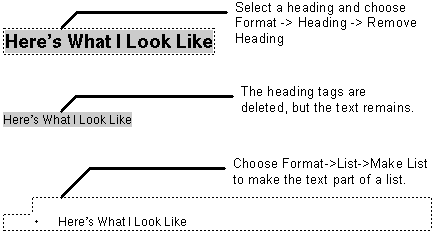

Table of Contents
Table of Contents
 Previous Section
Previous Section
Table of Contents
Previous Section
You can change or delete an element's tags, leaving the text intact. To do this:
Select the element.
From the Format menu, choose the command that deletes elements of this type.
Choose a command from the Format menu to add different element tags.
